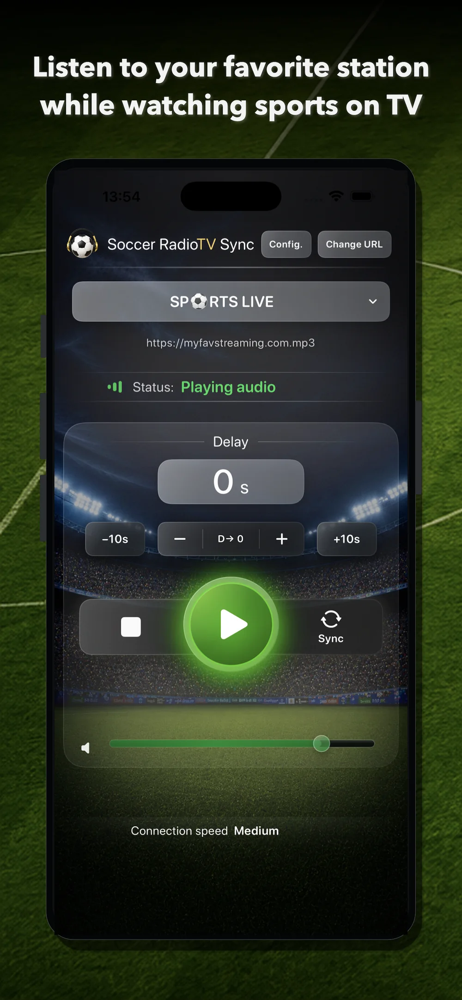
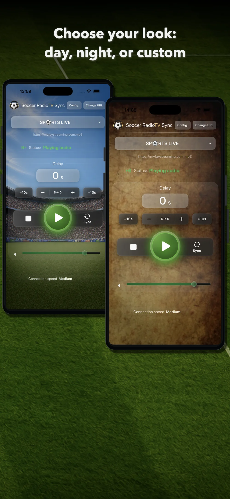
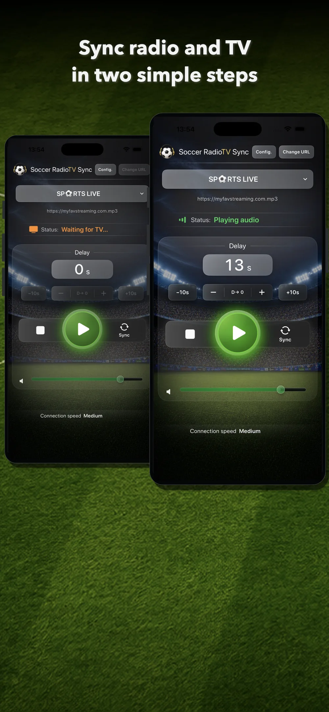
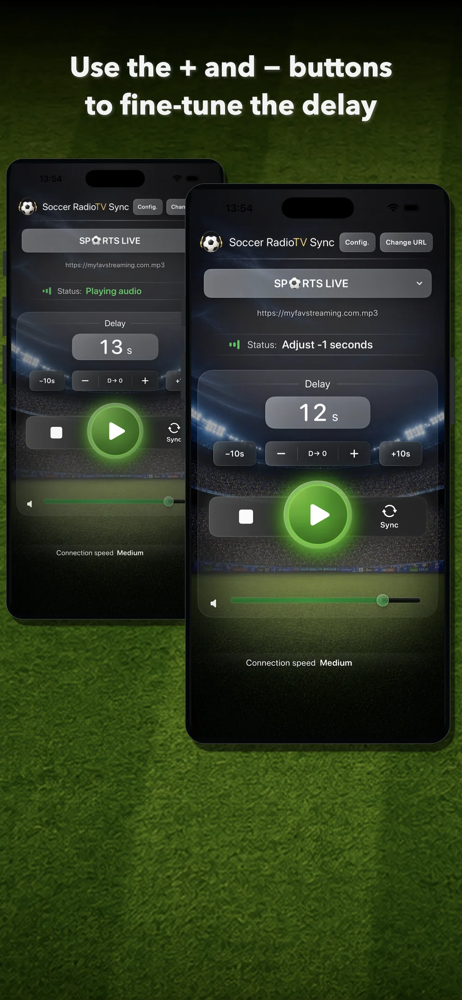
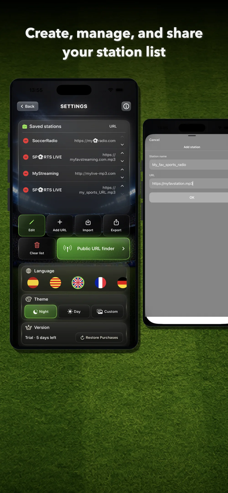
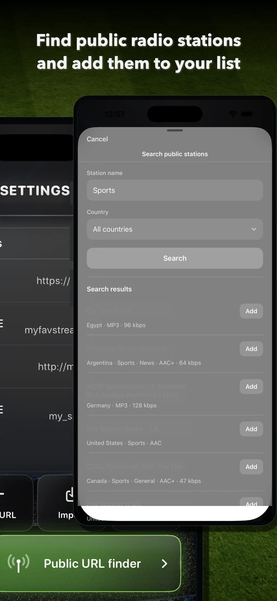

Choose a station
Select a saved station, add a compatible stream or switch between URLs for the same station.
Soccer RadioTv Sync lets you hear the radio commentary you choose, synchronized with the television picture while you watch football and other sports.
It is designed especially for sports on streaming TV, where the picture can arrive later than online radio. Adjust the radio delay from your iPhone and bring back the classic matchday experience: watching the game on TV while listening to your favorite commentary.

Discover public stations, add your own URLs and synchronize radio with the TV picture. After the trial, unlock Premium forever with a one-time purchase.
Soccer RadioTv Sync 2.0 introduces a more visual, modern and clear interface with a new design. The original idea remains the same: delay the radio so it matches the picture. Now it is easier to add sources through the public station finder, playback starts sooner after tapping Play, station selection has been improved, and you can personalize the look of the main screen.

The main screen keeps the essentials together: active station, current URL, playback status, delay value, adjustment controls, synchronization button, volume and connection speed.
Select a saved station, add a compatible stream or switch between URLs for the same station.
Start the audio, then synchronize it with the TV picture when a recognizable moment happens.
Use +, –, +10s and –10s to correct the delay without interrupting the match.

Tap Sync when you hear a recognizable moment on the radio. When you see that same moment on TV, tap Sync again. The app calculates the delay and adjusts playback so the radio matches the picture. After that, you can fine-tune the result with + and –.
Use + and – to correct any small mismatch between sound and TV while the match continues. Use +10s and –10s when you need faster changes. If you want to start again, reset the delay to zero with D→ 0.

Add stations through the search tool or manually, and build your own list. Manage the order of stations and their servers. Export your list as a backup or share it with friends.


Search public radio stations through an integrated finder based on Radio Browser.
This lets you add broadcasts from creators or commentators who only stream online.
Switch between the station's servers by tapping "Change URL".
In version 2.0, after tapping Play, the station starts sooner, making the app feel faster and more direct.
Use Day mode, Night mode or a custom background for the main screen.
No subscription, no ads, no account requirement and no personal data collection.
Test the app with your TV, your station and your way of watching sport before deciding.
One-time Premium unlock after the trial. No subscription. Previous paid users get Premium automatically.
Premium unlocks the full Soccer RadioTv Sync experience after the trial.
Soccer RadioTv Sync began with a very specific situation: its creator, a football fan since childhood, wanted to keep watching matches on TV while listening to his favorite radio commentator. With the arrival of streaming television, the picture began to lag behind the radio; goals could be heard before they were seen, ruining the experience. Unable to find a simple way to solve the problem, he developed a very basic first app on a 2013 MacBook. It played a single station, but its synchronization core could delay the audio to match the TV picture. While searching forums and social media, he discovered that fans in many different countries were discussing the same problem. The app could not remain just a prototype. That synchronization core became the foundation of the iPhone version of Soccer RadioTv Sync: an indie app designed specifically to let fans enjoy sports broadcasts the way they used to, adapted for the streaming era.
It lets you listen to a compatible online radio stream synchronized with the TV picture while watching sport, especially when streaming TV arrives later than online radio.
The app lets you search public stations through an integrated finder based on Radio Browser. You can also add your own compatible URLs manually.
You can use compatible online audio streams. Some stations, creators and services provide streams that can be added manually if they are compatible with the app playback system.
You can try another URL or server for the same station. Different servers can have different latency.
No. You do not need to create an account.
No. The app offers a 7-day free trial and then a one-time lifetime Premium unlock.
Previous paid users receive lifetime Premium automatically.
That is the main scenario. With streaming TV, the picture may arrive later than online radio, and the app can delay the radio to synchronize it with the picture.
With terrestrial broadcast or satellite, the timing can be different because the picture may arrive before online radio. Soccer RadioTv Sync is mainly designed for cases where the radio needs to be delayed to match a later TV picture.